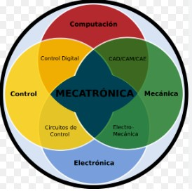

La Ingeniería Mecatrónica es una disciplina innovadora que combina la ingeniería mecánica, la electrónica, la informática y la ingeniería de control para diseñar y desarrollar sistemas inteligentes y automatizados. Esta fusión de diferentes áreas de la ingeniería permite la creación de productos y sistemas que son más eficientes, precisos y versátiles.

El DOM o Modelo de Objetos del Documento es, en palabras sencillas, la estructura que crea el navegador para "entender" y manipular tu código HTML.